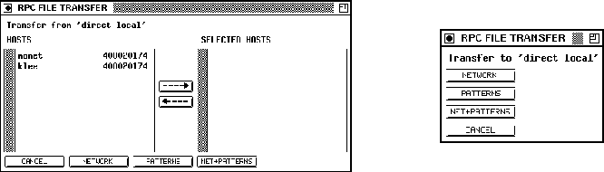

Next: RPC Errors
Up: Control Panels
Previous: Transfer Panels
With this panel it is possible to select the information, displayed in
the SNNS RPC panel. Items can be added or deleted with
the two arrows. The order of the selected items can be chosen with
 or
or

.
Figure: The RPC Info Panel
The possible fields are:
- HOST-NAME: the computer name on which the simulator kernel
is running,
- KERNEL-NAME: the version number under which the
simulator kernel is registered at the portmapper (this information
can also be displayed with 'rpcinfo -p'),
- STATUS: the last known state of the simulator kernel,
- DOMAINNAME: the domain name of the network,
- HOSTADDRESS:the host address of the simulator kernel,
- K-TYPE: the type of the simulator kernel ( "coop-master"
and "normal" are possible, but coop-master is not implemented in the
current version),
- KERNEL_ID: id of the simulator kernel in xgui,
- CYCLES: number of cycles the kernel used to train,
- EPOCH: number of epochs the kernel used to train,
- SSE: the sse error value,
- MSE: the mse error value,
- SSE/o-units: the sse error value divided bv the number of
output units,
- NO. PATTERN: the number of patterns,
- NO. UNITS: the number of units,
- NO. INPUT: the number of input units,
- NO. HIDDEN: the number of hidden units,
- NO. OUTPUT: the number of output units,
- NET NAME: the network name,
- PATTERN SET NAME: the name of the pattern sets,
- LEARN: the selected learning parameters,
- UPDATE: the selected update parameters,
- INIT: the selected initialization parameters.
Note that all information is usually not displayed immediately, but
with a small delay.
Niels.Mache@informatik.uni-stuttgart.de
Tue Nov 28 10:30:44 MET 1995